CAREER · OneWayTicketStudio
OneWayTicketStudio
2023.07 ~ 2026.05 · 기획팀 팀장 · PC Zombie Extraction FPS The Midnight Walkers
인 게임 페이즈 프로세스
좀비 익스트랙션 FPS는 시간이 지날수록 필드가 좁아지고 위험해지는 압박감이 핵심 재미입니다. 이를 구현하기 위해 일정 시간마다 페이즈가 전환되며 플로어 폐쇄·탈출 포인트 생성 등의 이벤트가 발생하는 구조를 이벤트 목록부터 데이터 구조, Flow chart까지 처음부터 설계했습니다.
페이즈 전환 이벤트
| 플로어 폐쇄 | 하나 이상의 플로어가 폐쇄되며, 폐쇄 전 사전 경고 장치로 알림. 폐쇄된 플로어에는 독가스가 퍼져 지속 피해를 입힘 |
|---|---|
| 탈출 포인트 생성 | 하나 이상의 탈출 포인트가 생성되며, 하나의 포인트로는 한 명만 탈출 가능. 탈출하려면 포인트를 활성화시켜야 함 |
| 레드룸 포인트 생성 | 별도의 이동 포인트가 생성되며 탈출 포인트와 같은 규칙(1인 전용)을 공유 |
각 이벤트의 수량·데미지 등은 MW_PhaseProcess 데이터 구조(NextPhase_ID, PhaseEndTime, ShutdownFloorCnt, PoisonDmg, AppearExtractPointCnt, ActivateRedroomCnt)로 관리해 마일스톤마다 밸런스만 조정하면 되도록 설계했고, 마지막 페이즈에서는 모든 플로어가 폐쇄되고 세션의 모든 유저가 사망(관전자는 로비 이동)해야 종료되도록 종료 조건까지 명시했습니다.
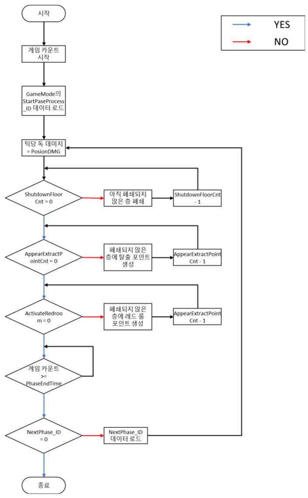
페이즈 전환 Flow chart: 카운트 경과 시 플로어 폐쇄 → 탈출 포인트/레드룸 포인트 생성 → 다음 페이즈 데이터 로드 순으로 반복
전투 시스템 설계 (전투 및 조작)
미드나잇 워커스만의 전투 양상을 정의하기 위해, 조작 전반을 다루는 종합 문서를 최초로 작성해 근접·원거리·투척 3대 무기 분류의 조작 규칙을 하나의 기준으로 통합했습니다. "연사 무기를 지양하고 단발성·근접 무기 조합으로 TTK를 확보한다"는 전투 디자인 철학을 세우고, 이를 크로스헤어·콤보·상호작용 등 세부 규칙까지 일관되게 반영했습니다.
전투 디자인 철학과 무기 분류
| 근접 전투 | 근접 무기를 들고 휘두르거나 찌르는 형태, 무기별로 콤보 수·공격 방식·크로스헤어가 차별화됨 |
|---|---|
| 원거리 전투 | 총기·활류를 ADS 상태에서만 사격 가능하도록 제한, 장전 타입은 탄창 교체식(현대 화기)과 개별 삽입식(리볼버·샷건 등)으로 구분 |
| 투척류 전투 | 투척 무기를 던져 무기별 효과를 발현, 직선 투척과 포물선 투척으로 궤적을 구분 |
연사 무기를 지양하는 것은 "장비의 가치를 극대화해 약탈과 탐색의 재미를 살린다"는 게임 전체 방향성과 맞물린 선택으로, 별도의 제안서에서 근거를 먼저 정리한 뒤 조작 문서에 반영했습니다. 무기별 공격 방식을 직관적으로 알려주기 위해 크로스헤어 형태를 무기 종류·콤보 단계마다 다르게 설계했습니다.
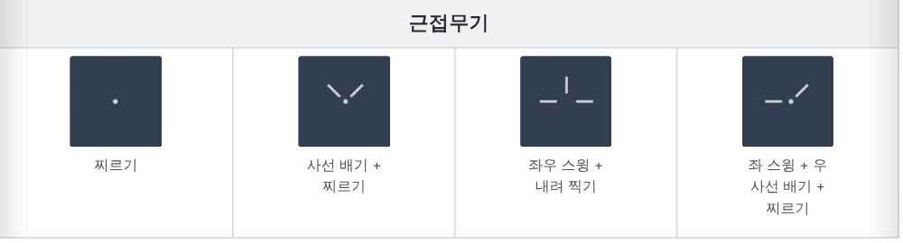
근접 무기별 크로스헤어: 공격 패턴(찌르기·사선 배기·좌우 스윙·내려 찍기 조합)에 따라 형태가 달라짐
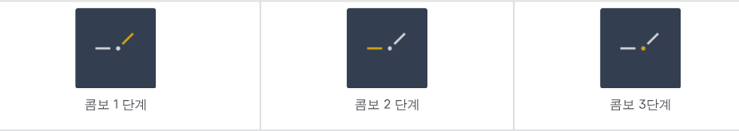
콤보 단계별 하이라이트: 현재 콤보 단계에 맞는 다음 공격 방향을 크로스헤어에 강조 표시
서브 액션과 가드 시스템
RMB로 발동되는 서브 액션은 무기 특성에 따라 ADS·특수 공격·가드 중 하나로 동작하도록 분류했습니다. 그중 가드는 기존 시스템을 폐기하고 처음부터 다시 설계한 것으로, Start → Loop → End의 3단 모션 구조에 Just Guard 판정과 가드 게이지를 결합해 단순한 방어를 넘어선 타이밍 게임으로 만들었습니다.
| 가드 전환 | RMB Hold로 진입, Start(막는 자세) → Loop(유지) → End(Idle 복귀) 구조. Loop 진입 전까지는 다른 입력으로 캔슬 가능 |
|---|---|
| 가드 판정 | 무기 콜리전이 부딪히면 가드로 인정, Just 판정 구간에 맞으면 Just Guard로 별도 인정 |
| 일반 가드 성공 | 3초간 공격 속도 30% 증가 |
| Just Guard 성공 | 5초간 공격 속도 50% · 방어력 20% 증가, 가드 → Idle 복귀 속도도 빨라짐 |
| 가드 파괴 · 무시 공격 | 가드 게이지를 0으로 만들고 리액션 없이 관통, 피격자는 대미지 50%를 그대로 받고 1초간 이동 속도 감소 |
가드 게이지는 피격 시 무기별 가드 대미지만큼 감소하고, 가드를 풀면 초당 10%씩 자동 회복됩니다. 게이지가 0이 되어 파괴되면 가드 자체가 봉쇄되고, 파괴 이후에는 회복 속도가 초당 5%로 느려져 완전히 채워지기 전까지 다시 가드할 수 없도록 설계해 "막기만 하면 안전하다"는 공식이 성립하지 않게 만들었습니다.
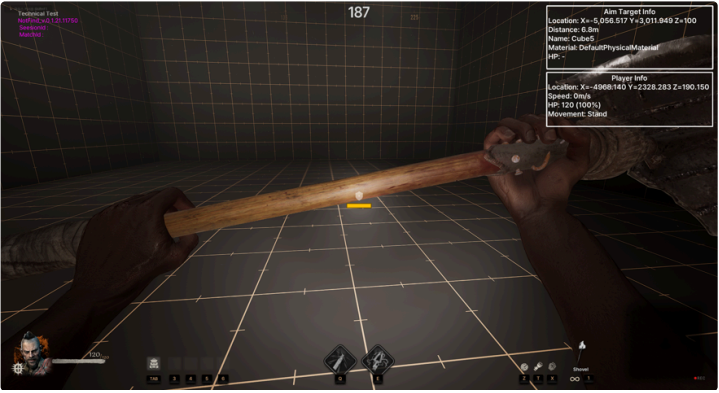
가드 게이지 정상 상태: 가드 중 무기 아래 게이지가 노란색으로 표시됨
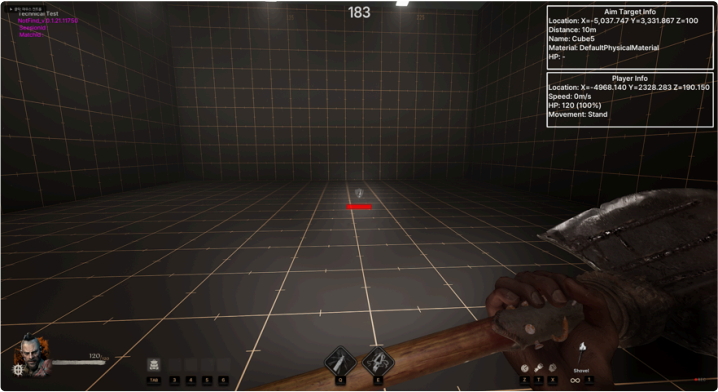
가드 파괴 상태: 게이지가 붉은색으로 점멸, 완전 회복 전까지 재사용 불가
전투불능 · 부활 시스템 (넉다운)
체력이 0이 되는 순간 바로 실패로 처리하지 않고, 넉다운 상태로 전환해 아군의 개입 여지를 주는 시스템을 설계했습니다. 넉다운 상태에서도 기어서 탈출까지 가능하게 하는 한편, 부활을 반복할수록 디버프가 누적되는 장치를 함께 넣어 무분별한 부활 남용을 막았습니다. Factorial Games의 전투불능·부활 시스템과 문제의식은 비슷하지만, 익스트랙션 장르 특성상 "넉다운 상태로도 탈출이 가능해야 한다"는 조건이 추가되어 상태 전이 구조를 다시 설계했습니다.
넉다운 상태와 행동 제한
| 진입 조건 | 낙사·헤드샷·특수 공격 등 예외 없이 HP가 0 이하가 되면 진입, 무조건 맨손 상태로 전환 |
|---|---|
| 넉다운 HP | 별도의 HP가 부여되며 시간 경과에 따라 자동 감소(기본 60초 후 사망), 무기·도트·가스 등 실제 피해만 추가로 적용 |
| 이동 속도 | 정상의 25%로 기어다니기만 가능 |
| 가능한 행동 | 기어다니기, 상호작용(문·엘리베이터·탈출 포드), 코드 추출, 탈출 등 탈출 관련 행동은 유지 |
| 불가능한 행동 | 공격·스킬·아이템 사용·점프·인벤토리 등, 다른 넉다운 아군 부활도 불가 |
| 포기 | 부활 가능성이 없을 때 스스로 사망을 선택(G키 3초 홀드), 대기 중 취소 가능 |
아군 부활과 부활 디버프
| 부활 조건 | F키로 상호작용 시작, 7~10초간 거리·시선을 유지해야 완료. 거리 이탈·재입력·부활자 본인의 넉다운 시 캔슬(피격은 캔슬 안 됨) |
|---|---|
| 부활 후 상태 | 최대 HP의 일정 비율로 복귀, 넉다운된 위치 그대로 유지, 무기는 맨손 상태로 시작 |
| 부활 디버프 | 부활할 때마다 스택 1 증가(최대 3스택), 스택당 다음 넉다운 진입 시 넉다운 HP가 20%씩 낮게 시작하도록 설계해 잦은 부활에 페널티 부여 |
연출 측면에서도 넉다운 진입·기어다니기·부활 완료 상태별로 카메라 높이, 화면 비네팅, 캐릭터 포트레이트, 사운드(적에게도 들리도록 설계해 위치 노출 리스크 부여)까지 상태별로 정의해 아트팀이 바로 작업할 수 있는 수준으로 정리했습니다.
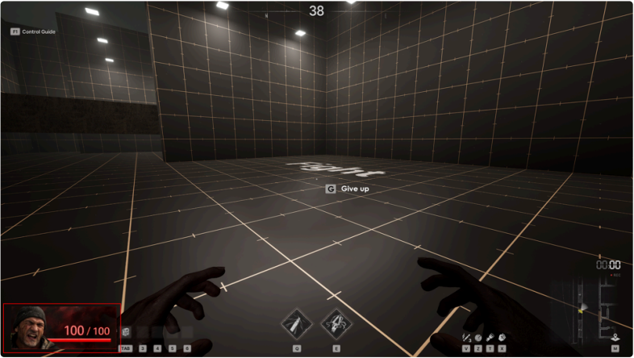
넉다운 기어다니기 POV: 화면 하단 넉다운 HP 게이지와 "G Give up" 포기 안내 표시
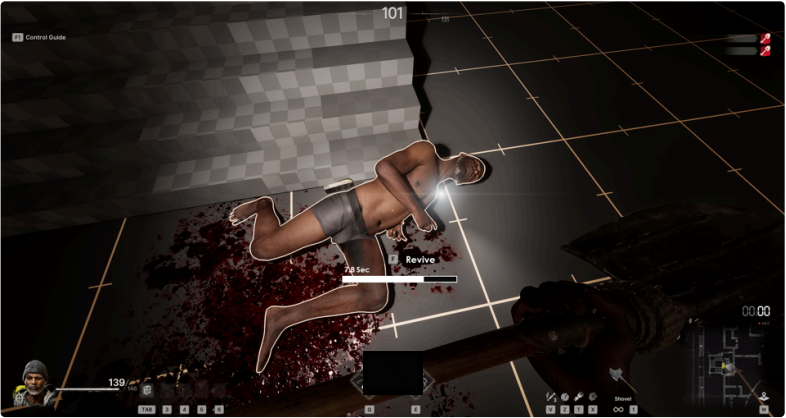
아군 부활 상호작용: 넉다운된 아군을 바라보며 F키로 부활 진행, 진행 시간 게이지 표시
넉다운 HP·이동 속도·부활 소요 시간·디버프 감소율 등 모든 수치는 데이터 테이블 하나로 관리해 기획자가 직접 밸런스를 조정할 수 있도록 했고, 공용 캐릭터 스탯으로 대체 가능한 항목은 생략할 수 있도록 여지를 남겨 시스템 간 중복을 최소화했습니다.
인게임 시스템 (분쇄기)
엘리베이터·상자·문·잠긴 문 등과 같은 인게임 오브젝트 중 하나로, 아이템을 소재로 바꾸는 분쇄기를 설계했습니다.
분쇄기 시스템
| 목적 | 불필요한 아이템을 소재로 변환해 인게임 진입 목적을 하나 더 추가, 위치가 고정된 Hot zone으로 만들어 동선에 리스크를 부여 |
|---|---|
| On/Off 동작 | Off 상태에서는 Input에 아이템이 있어도 분쇄 진행 안 함, Output이 가득 차면 On 상태여도 자동 정지 후 공간이 생기면 이어서 진행 |
| 분쇄 순서·취소 | 인벤토리 획득 규칙과 동일하게 좌상단 슬롯부터 순차 분쇄, 분쇄 중인 아이템을 다른 슬롯으로 옮기면 진행도 초기화 |
| 데이터 구조 | DT_Grinder(Group_ID·OutputItem_ID·OutputItem_Stack)로 투입 아이템과 산출 아이템·수량을 매칭해 관리 |
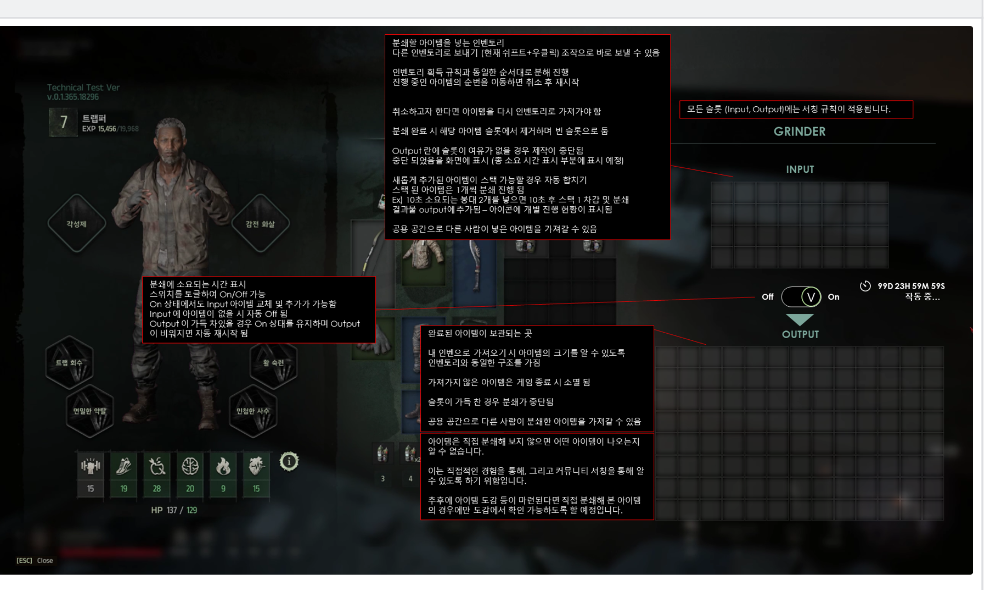
분쇄기 UI 예시: 캐릭터 장비 패널(좌)과 GRINDER INPUT/OUTPUT 그리드, On/Off 토글(우)
아웃게임 시스템 (상점 · 친구)
캐릭터·아이템 창작 외에 상점과 친구 시스템도 처음부터 설계했습니다. 상점은 재화·진열 로직을, 친구는 기존에 흩어져 있던 스쿼드 관련 UI들을 하나의 소셜 허브로 통합하는 리뉴얼이었습니다.
벤더 (상점)
| 상점 종류 | 판매·구매 모두 가능한 상점, 한 가지만 가능한 상점, 등급 미표시 상태로 구매 후 확정되는 도박형 상점까지 타입 구분 |
|---|---|
| 진열 | 기본 진열(최하 등급 위주 고정 목록)과 랜덤 진열(확률로 고급 아이템 등장, 구매 시 진열대에서 소멸)로 이원화, 일정 시간마다 리셋 |
| 재화 처리 우선순위 | 구매 시 캐릭터 인벤토리의 재화를 우선 소모, 판매 시 획득 재화는 캐릭터 인벤토리로 우선 지급(창고는 공간 부족 시에만 사용) |
| 미확정 요소 | 친밀도(거래 누적으로 진열 수량·등급 확률 상승)와 협상(가격 흥정) 기능은 방향만 잡아두고 확정 전까지 개발에서 제외 |
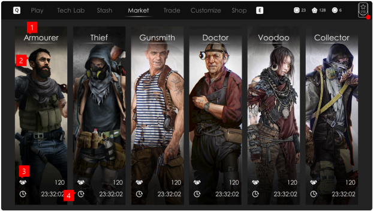
상인 선택 화면: 취급 품목이 다른 6종 상인을 카드 형태로 배치
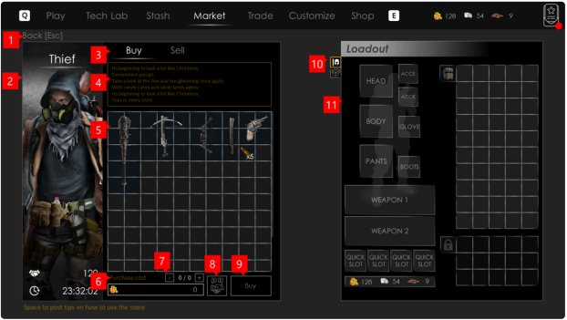
구매 화면: 상인 진열대(좌)와 캐릭터 장비·인벤토리(우)를 함께 표시
친구 (소셜 허브)
로비에 흩어져 있던 "스쿼드 초대 목록"·"스쿼드 초대" 두 UI를 하나의 소셜 허브 팝업으로 통합해, 친구 관리·초대 수신·유저 검색·스쿼드 초대를 한 진입점에서 처리할 수 있도록 리뉴얼했습니다.
| 구성 | 좌측 스쿼드 패널(내 캐릭터+멤버 카드+탈퇴 버튼) + 우측 5개 탭(스쿼드 요청·친구·친구 요청·최근 플레이어·검색) |
|---|---|
| 규칙 | 최대 친구 50명, 친구·스쿼드 초대 수신 최대 50건, 스쿼드 초대 메시지는 10분 경과 시 만료 처리 |
| 크로스 리전 | 모든 리전 간 친구 등록이 가능하고 다른 리전 친구와도 스쿼드 구성 가능, 인게임 진입 시 리더의 리전으로 접속 |
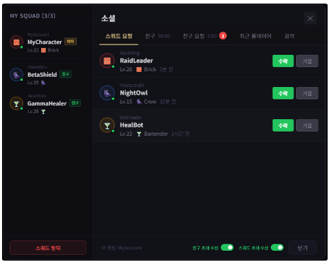
소셜 허브 목업: 좌측 스쿼드 패널 + 우측 5탭(스쿼드 요청/친구/친구 요청/최근 플레이어/검색)
인터랙티브 프로토타입
제작·일일 미션·탈출 시스템은 실제로 동작하는 인터랙티브 프로토타입을 별도로 만들어 두었습니다. 각 카드를 눌러 실제 설계 흐름과 데모를 확인할 수 있습니다.